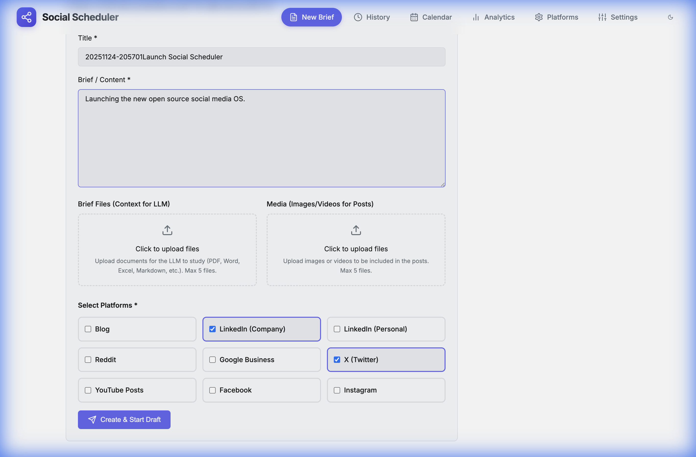
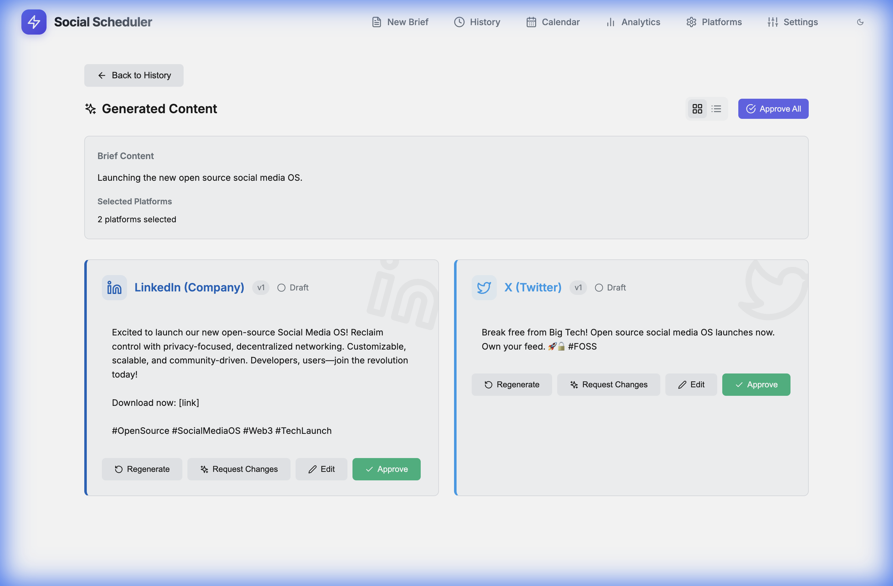
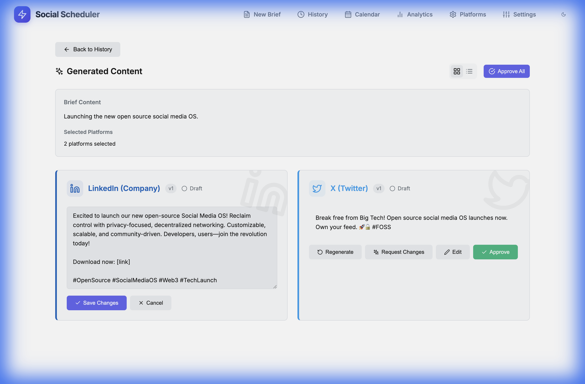
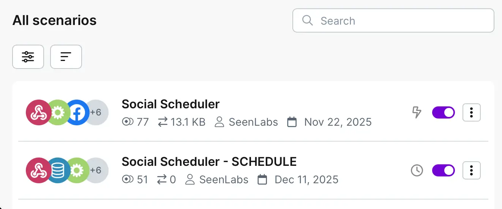
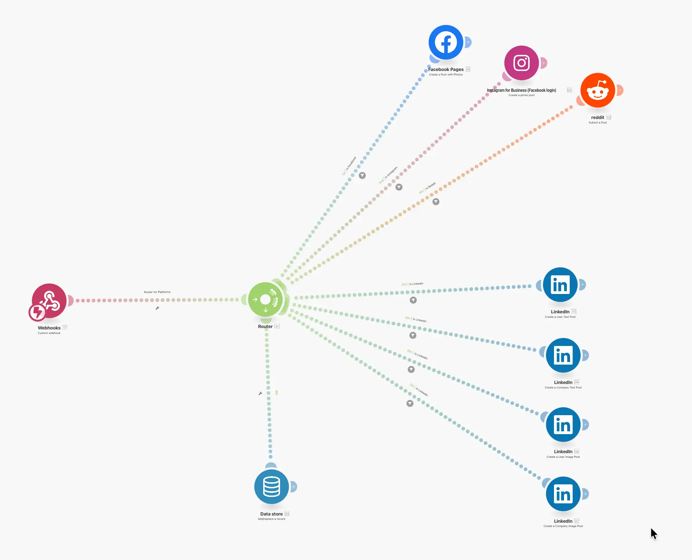
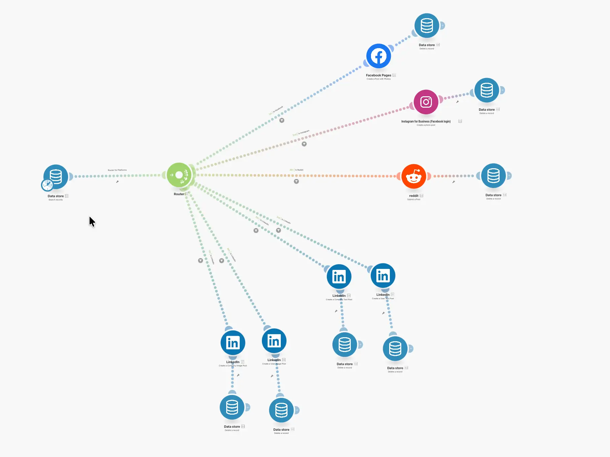
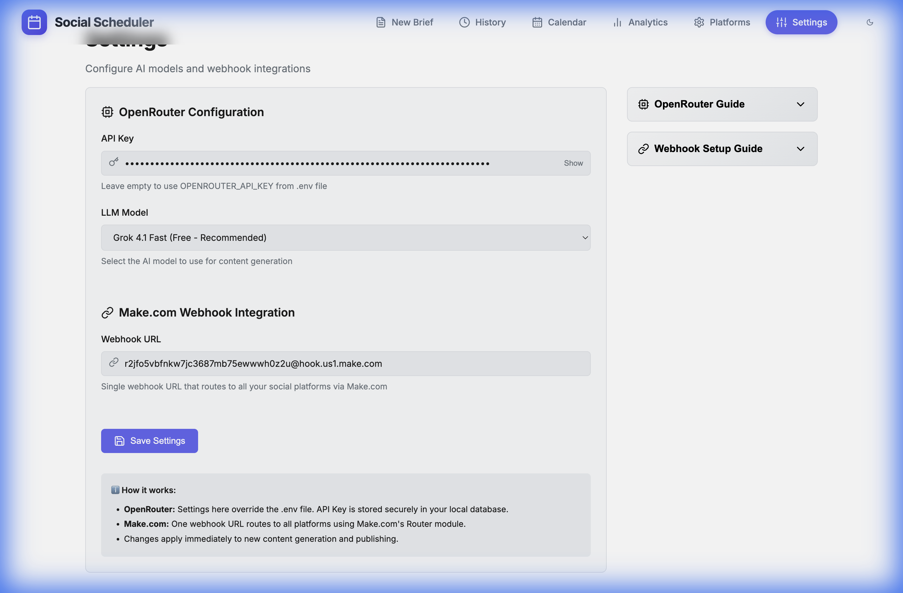

📚 Documentation
Complete guide to setting up and using Social Scheduler for social media management.
Beta · Found a bug? Report on GitHub
Getting Started
Social Scheduler runs locally on your machine. Here's how to get it running:
Option 1: Download Desktop App
The easiest way — download the pre-built app for your platform:
- Go to Releases
- Download the file for your OS (macOS, Windows, or Linux)
- Install and run
macOS users: Apps downloaded outside the App Store get flagged with a quarantine
attribute (com.apple.Quarantine), which triggers the "damaged and can't be opened"
message. Simply remove this attribute to launch the app:
xattr -c "/Applications/Social Scheduler.app"After running this command, the app will open normally. 🎉
Option 2: Run from Source
# Clone the repository
git clone https://github.com/tervahagn/social-scheduler.git
cd social-scheduler
# Install dependencies
cd backend && npm install
cd ../frontend && npm install
# Configure
cp .env.example .env
# Edit .env with your OpenRouter API key
# Run
./start.shOpen http://localhost:3000 in your browser.
Quick Post
Quick Post lets you write once and publish to multiple platforms instantly.
- Click "Quick Post" in the sidebar
- Write your content
- Select platforms (LinkedIn, Twitter, Facebook, etc.)
- See real-time character counters for each platform
- Click "Publish Now" or "Schedule" to pick a date
Tip: Each platform has different character limits. Quick Post shows you when you're over the limit for each one.

Calendar & Scheduling
The Calendar shows all your scheduled and published posts in one view.
- Purple — Scheduled posts (waiting to be published)
- Green — Published posts
- Click any post to view or edit it
- Switch between Month, Week, and Day views
When you schedule a post, Social Scheduler sends it to your Make.com Data Store. The Publisher scenario (running on a schedule) picks it up and posts it at the right time.

Brief Mode
Brief mode uses AI to generate platform-specific posts from a single idea.
- Click "New Brief" in the sidebar
- Write your main idea or paste an article
- Select which platforms you want posts for
- Click "Generate" — AI creates a unique post for each platform
- Edit any post if needed
- Approve and publish or schedule
Each platform gets content optimized for its format: LinkedIn gets professional tone, Twitter gets short punchy text, Instagram gets hashtags, etc.

Prompts & Brand Voice
Social Scheduler uses a three-tier prompt system to generate content that sounds like you, optimized for each platform.
🎯 Master Prompt (Brand Voice)
This is your brand's personality — how you sound across all content. It's written once and applied to everything you generate.
Define things like:
- Tone: professional, casual, witty, authoritative
- Style: use of emojis, sentence length, vocabulary level
- Perspective: first person ("I/we") or third person
- Values: what your brand stands for
Example: "Write in a confident, friendly tone. Use short sentences. Avoid jargon. Address the reader as 'you'. Include one relevant emoji per post."
📱 Platform Prompts (Channel Customization)
Each platform has its own prompt that adapts content to the channel's unique format and audience expectations:
- LinkedIn — Professional tone, structured paragraphs, thought leadership angle
- Twitter/X — Punchy hooks, concise points, thread-friendly
- Instagram — Visual context, storytelling, hashtag strategy
- Reddit — Authentic, conversational, no marketing-speak
- Facebook — Community-focused, shareable, engaging questions
- YouTube — Descriptive, keyword-rich, call-to-action
You can customize these in Settings → Platform Prompts.
📝 Brief Input (Content Prompt)
This is what you write when creating a new brief — your idea, article, announcement, or any source material. The AI combines:
Your Brief Input (the idea)
↓
Master Prompt (brand voice)
↓
Platform Prompt (channel rules)
↓
Final post for each platformThis layered approach ensures every post sounds like your brand while being native to each platform.
Make.com Integration
Social Scheduler uses Make.com (formerly Integromat) for actual publishing. This keeps the app simple and avoids dealing with constantly changing social media APIs.
Architecture: Two Scenarios
You need two scenarios in Make.com:
- Receiver Scenario — Receives posts from Social Scheduler via webhook, saves to Data Store
- Publisher Scenario — Runs on a schedule, reads from Data Store, posts to platforms

Step 1: Create Data Store
- In Make.com, go to Data Stores → Create a new one
- Name it "Social Scheduler Posts"
- Add these fields:
post_id(Text) — Primary keyplatform(Text)content(Text)media_url(Text)scheduled_at(Date)
Step 2: Create Receiver Scenario
- Create new scenario
- Add trigger: Webhooks → Custom Webhook
- Copy the webhook URL
- Paste it in Social Scheduler Settings → Webhook URL
- Add module: Data Store → Add/Replace a Record
- Map the incoming fields to your Data Store
- Turn ON the scenario

Step 3: Create Publisher Scenario
- Create new scenario
- Add trigger: Schedule (every 5 minutes)
- Add module: Data Store → Search Records
- Filter:
scheduled_atless than or equal tonow - Add Router to branch by platform
- For each branch, add the platform module (LinkedIn, Facebook, etc.)
- After each platform, add: Data Store → Delete a Record
- Turn ON the scenario

Important: Always add "Delete Record" after each platform to avoid duplicate posts.
OpenRouter & AI
Social Scheduler uses OpenRouter for AI content generation. OpenRouter gives you access to GPT-4, Claude, Llama, Gemini, and many other models.
Setup
- Create account at openrouter.ai
- Go to Settings → API Keys → Create new key
- Copy the key (starts with
sk-or-) - Paste in Social Scheduler Settings → OpenRouter API Key
- Choose your preferred model
Recommended Models
- claude-3.5-sonnet — Best quality, good for professional content
- gpt-4-turbo — Reliable, widely tested
- llama-3.1-70b — Good free option
- gemini-pro — Fast and capable

Troubleshooting
"App is damaged" on macOS
When you download an app from anywhere other than the Mac App Store, macOS adds an extended attribute
called com.apple.Quarantine. This is Gatekeeper's way of protecting you — but for apps like
Social Scheduler that aren't notarized by Apple, it shows the frustrating "damaged and can't be opened"
error.
The fix is simple — remove the quarantine attribute:
xattr -c "/Applications/Social Scheduler.app"That's it! Launch the app and enjoy. 🚀
Backend not starting
Check if port 3001 is already in use:
lsof -i :3001
# If something is using it, kill it:
kill -9 [PID]Posts not appearing in Make.com
- Check that the webhook URL in Settings is correct
- Make sure the Receiver scenario is turned ON
- Check Make.com scenario history for errors
AI generation fails
- Verify your OpenRouter API key is correct
- Check if you have credits in OpenRouter
- Try a different model
Need help? Open an issue on GitHub.